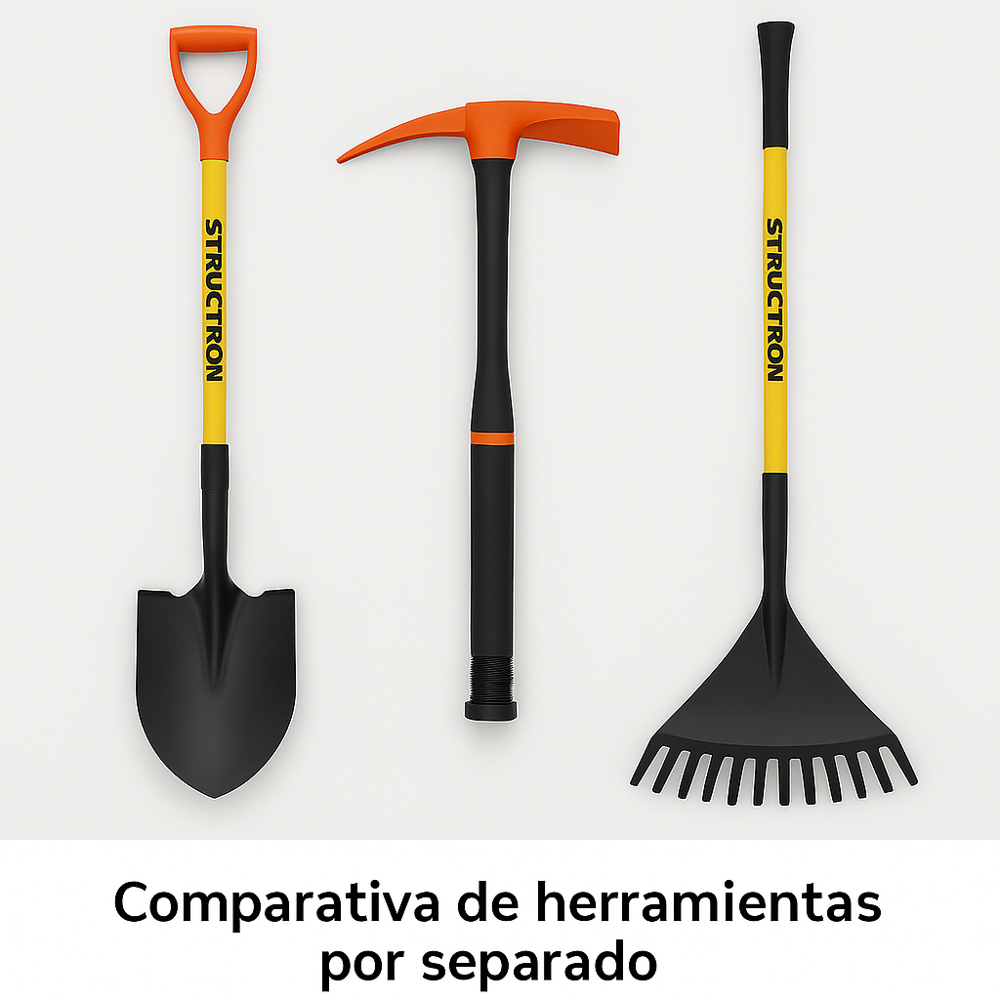

TOOLMEX
Distribución y comercialización de herramientas innovadoras
Distribución y comercialización de herramientas innovadoras
Inspirar al mundo con nuestros productos y diseños innovadores que enriquecen la vida de las personas y contribuyen a la prosperidad social.
Ofrecer la mejor experiencia a nuestros clientes a través de herramientas más fáciles e innovadoras.
TOOLMEX ofrece una herramienta multiusos que reemplaza hasta tres herramientas tradicionales (pala, pico y rastrillo) con un diseño liviano, compacto y ergonómico.
La innovación incluye un mango enroscable adaptable, materiales resistentes como acero inoxidable, madera sólida de encino y empuñaduras de silicona. Todo esto por solo $1,045.00 MXN.
| Material | Propiedad |
|---|---|
| Madera de encino | Alta resistencia mecánica |
| Silicona | Mejora agarre y comodidad |
| Acero inoxidable | Resistencia a la corrosión |
| Pintura decorativa | Protección contra clima y químicos |
Herramientas por separado: $6,547.28 MXN
TOOLMEX 3-en-1: $1,045.00 MXN